MLP
多层感知机（multilayer Perceptron, MLP）是一种前馈人工神经网络，由多个神经元（神经节点）组成/这些神经元按照层次结构排列，包括输入层、隐藏层和输出层，层与层之间的神经元通过权重全连接，信息从输入层依次向前传播到输出层，没有反馈连接。通过反向传播更新参数。
CNN
MLP十分适合处理表格数据，其中行对应样本，列对应特征。 对于表格数据，我们寻找的模式可能涉及特征之间的交互，但是我们不能预先假设任何与特征交互相关的先验结构。 此时，多层感知机可能是最好的选择，然而对于高维感知数据，这种缺少结构的网络可能会变得不实用。 卷积神经网络（convolutional neural networks，CNN）是机器学习利用自然图像中一些已知结构的创造性方法。
适合于计算机视觉的神经网络架构应具有如下性质：
-
平移不变性（translation invariance）：不管检测对象出现在图像中的哪个位置，神经网络的前面几层应该对相同的图像区域具有相似的反应，即为“平移不变性”。
-
局部性（locality）：神经网络的前面几层应该只探索输入图像中的局部区域，而不过度在意图像中相隔较远区域的关系，这就是“局部性”原则。最终，可以聚合这些局部特征，以在整个图像级别进行预测。
严格来说，卷积层是个错误的叫法，因为这里所设计的运算其实是互相关运算（cross-correlation），而不是卷积运算。
多输入通道的互相关运算，简而言之，就是对每个通道执行互相关操作，然后将结果相加。
汇聚（pooling，池化）层具有双重目的：降低卷积层对位置的敏感性，同时降低对空间降采样表示的敏感性。通常当我们处理图像时，我们希望逐渐降低隐藏表示的空间分辨率、聚集信息，这样随着我们在神经网络中层叠的上升，每个神经元对其敏感的感受野（输入）就越大。 而我们的机器学习任务通常会跟全局图像的问题有关（例如，“图像是否包含一只猫呢？”），所以我们最后一层的神经元应该对整个输入的全局敏感。通过逐渐聚合信息，生成越来越粗糙的映射，最终实现学习全局表示的目标，同时将卷积图层的所有优势保留在中间层。
LeNet
使用卷积层进行处理，我们可以在图像中保留空间结构。同时，卷积层代替全连接层的另一个好处是：模型更简洁、所需的参数更少。
LeNet是最早发布的卷积神经网络之一，LeNet（LeNet-5）由两个部分组成：
- 卷积编码器：由两个卷积层组成;
- 全连接层密集块：由三个全连接层组成。
下面两图展示了LeNet的架构：
现代卷积神经网络
深度卷积神经网络（AlexNet）
从LeNet（左）到AlexNet（右）
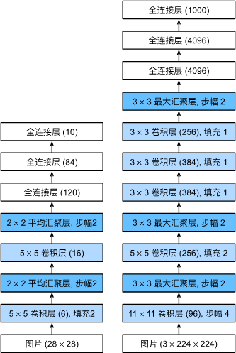使用块的网络（VGG）
经典卷积神经网络的基本组成部分是下面的这个序列：
-
带填充以保持分辨率的卷积层；
-
非线性激活函数，如ReLU；
-
汇聚层，如最大汇聚层。
而一个VGG块与之类似，由一系列卷积层组成，后面再加上用于空间下采样的最大汇聚层。
从AlexNet到VGG，它们本质上都是块设计
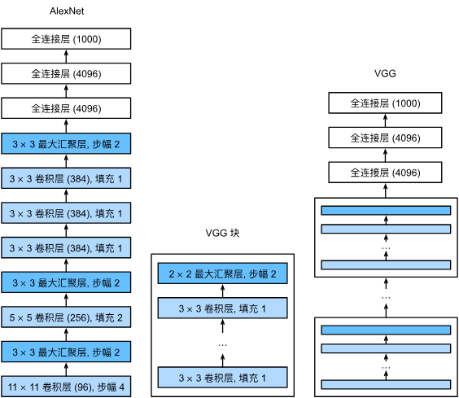网络中的网络（NiN）
NiN块以一个普通卷积层开始，后面是两个$1\times1$ 的卷积层。这两个$1\times1$ 卷积层充当带有ReLU激活函数的逐像素全连接层。
对比 VGG 和 NiN 及它们的块之间主要架构差异
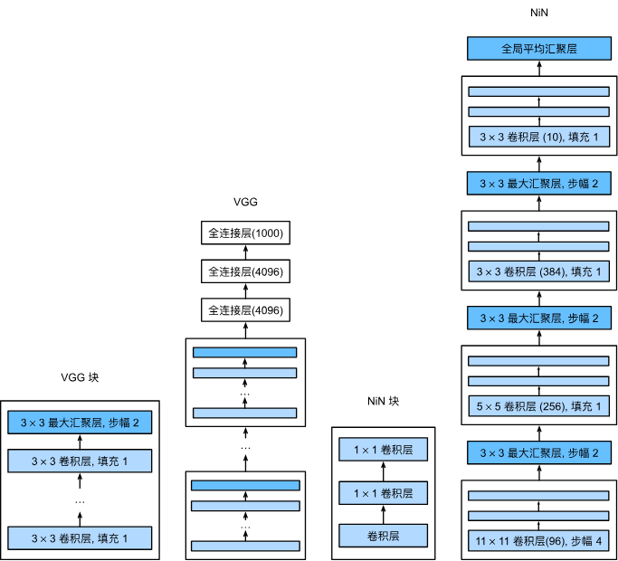NiN和AlexNet之间的一个显著区别是NiN完全取消了全连接层。 相反，NiN使用一个NiN块，其输出通道数等于标签类别的数量。最后放一个全局平均汇聚层（global average pooling layer），生成一个对数几率 （logits）。NiN设计的一个优点是，它显著减少了模型所需参数的数量。然而，在实践中，这种设计有时会增加训练模型的时间。
小结：
-
NiN使用由一个卷积层和多个 卷积层组成的块。该块可以在卷积神经网络中使用，以允许更多的每像素非线性。
-
NiN去除了容易造成过拟合的全连接层，将它们替换为全局平均汇聚层（即在所有位置上进行求和）。该汇聚层通道数量为所需的输出数量（例如，Fashion-MNIST的输出为10）。
-
移除全连接层可减少过拟合，同时显著减少NiN的参数。
-
NiN的设计影响了许多后续卷积神经网络的设计。
含并行连结的网络（GoogLeNet）
在GoogLeNet中，基本的卷积块被称为Inception块（Inception block）。这很可能得名于电影《盗梦空间》（Inception），因为电影中的一句话“我们需要走得更深”（“We need to go deeper”）。
Inception块的架构
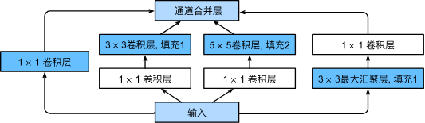GoogLeNet架构
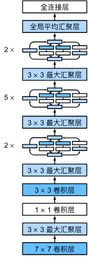小结：
-
Inception块相当于一个有4条路径的子网络。它通过不同窗口形状的卷积层和最大汇聚层来并行抽取信息，并使用 卷积层减少每像素级别上的通道维数从而降低模型复杂度。
-
GoogLeNet将多个设计精细的Inception块与其他层（卷积层、全连接层）串联起来。其中Inception块的通道数分配之比是在ImageNet数据集上通过大量的实验得来的。
-
GoogLeNet和它的后继者们一度是ImageNet上最有效的模型之一：它以较低的计算复杂度提供了类似的测试精度。
批量规范化
训练深层神经网络是十分困难的，特别是在较短的时间内使他们收敛更加棘手。 本节将介绍批量规范化（batch normalization），这是一种流行且有效的技术，可持续加速深层网络的收敛速度。 再结合在下一小节中将介绍的残差块，批量规范化使得研究人员能够训练100层以上的网络。
$$\mathrm{BN}(\mathbf{x}) = \boldsymbol{\gamma} \odot \frac{\mathbf{x} - \hat{\boldsymbol{\mu}}_\mathcal{B}}{\hat{\boldsymbol{\sigma}}_\mathcal{B}} + \boldsymbol{\beta}.$$残差网络（ResNet）
一个正常块（左图）和一个残差块（右图）
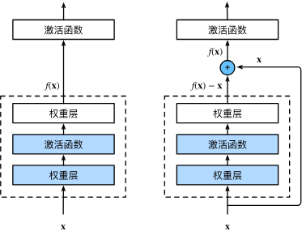左图虚线框中的部分直接拟合映射$f(\mathbf{x})$，而右图则是拟合出残差映射$f(\mathbf{x}) - \mathbf{x}$。
ResNet-18 架构
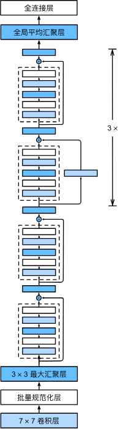小结：
-
学习嵌套函数（nested function）是训练神经网络的理想情况。在深层神经网络中，学习另一层作为恒等映射（identity function）较容易（尽管这是一个极端情况）。
-
残差映射可以更容易地学习同一函数，例如将权重层中的参数近似为零。
-
利用残差块（residual blocks）可以训练出一个有效的深层神经网络：输入可以通过层间的残余连接更快地向前传播。
-
残差网络（ResNet）对随后的深层神经网络设计产生了深远影响。
稠密连接网络（DenseNet）
ResNet将 分解为两部分：一个简单的线性项和一个复杂的非线性项。 那么再向前拓展一步，如果我们想将 拓展成超过两部分的信息呢？ 一种方案便是DenseNet。
小结：
-
在跨层连接上，不同于ResNet中将输入与输出相加，稠密连接网络（DenseNet）在通道维上连结输入与输出。
-
DenseNet的主要构建模块是稠密块和过渡层。
-
在构建DenseNet时，我们需要通过添加过渡层来控制网络的维数，从而再次减少通道的数量。
RNN
如果说卷积神经网络可以有效地处理空间信息， 那么循环神经网络（recurrent neural network，RNN）则可以更好地处理序列信息。 循环神经网络通过引入状态变量存储过去的信息和当前的输入，从而可以确定当前的输出。
Preliminaries
- 隐变量自回归模型：
- 一个经典方法是使用历史观测来预测下一个未来观测。 显然，我们并不指望时间会停滞不前。 然而，一个常见的假设是虽然特定值 可能会改变， 但是序列本身的动力学不会改变。 这样的假设是合理的，因为新的动力学一定受新的数据影响， 而我们不可能用目前所掌握的数据来预测新的动力学。 统计学家称不变的动力学为静止的（stationary）。 因此，整个序列的估计值都将通过以下的方式获得： $$P(x_1,x_2,\cdots,x_T)=\prod_{t=1}^TP(x_t|x_{t-1},\cdots,x_1).$$
- 一阶马尔可夫模型： $$P(x_1,x_2,\cdots,x_T)=\prod_{t=1}^TP(x_t|x_{t-1}),\quad P(x_1|x_0)=P(x_1).$$
循环神经网络（recurrent neural networks，RNNs） 是具有隐状态的神经网络。下图展示了循环神经网络在三个相邻时间步的计算逻辑。 在任意时间步，隐状态的计算可以被视为：
- 拼接当前时间步$t$的输入$X_t$和前一时间步$t-1$的隐状态$H_{t-1}$。
- 将拼接的结果送入带有激活函数$\phi$的全连接层。 全连接层的输出是当前时间步$t$的隐状态$H_t$。
具有隐变量的循环神经网络
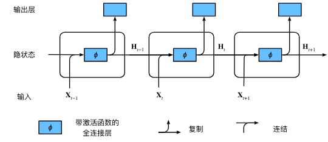当前时间步隐藏层计算公式：
$$\mathbf{H}_t = \phi(\mathbf{X}_t \mathbf{W}_{xh} + \mathbf{H}_{t-1} \mathbf{W}_{hh} + \mathbf{b}_h),\tag{1}$$输出层输出：
$$\mathbf{O}_t = \mathbf{H}_t \mathbf{W}_{hq} + \mathbf{b}_q.$$从相邻时间步的隐藏变量$H_t$和$H_{t-1}$之间的关系可知， 这些变量捕获并保留了序列直到其当前时间步的历史信息， 就如当前时间步下神经网络的状态或记忆， 因此这样的隐藏变量被称为隐状态（hidden state）。 由于在当前时间步中， 隐状态使用的定义与前一个时间步中使用的定义相同， 因此 (1)的计算是循环的（recurrent）。 于是基于循环计算的隐状态神经网络被命名为 循环神经网络（recurrent neural network）。 在循环神经网络中执行 (1)计算的层 称为循环层（recurrent layer）。
现代循环神经网络
门控循环单元（Gate reccurent unit，GRU）
门控循环单元与普通的循环神经网络之间的关键区别在于： 前者支持隐状态的门控。 这意味着模型有专门的机制来确定应该何时更新隐状态， 以及应该何时重置隐状态。 重置门$\mathbf{R}_t \in \mathbb{R}^{n \times h}$和更新门$\mathbf{Z}_t \in \mathbb{R}^{n \times h}$的计算如下所示：
$$\begin{aligned} \mathbf{R}_t = \sigma(\mathbf{X}_t \mathbf{W}_{xr} + \mathbf{H}_{t-1} \mathbf{W}_{hr} + \mathbf{b}_r),\\ \mathbf{Z}_t = \sigma(\mathbf{X}_t \mathbf{W}_{xz} + \mathbf{H}_{t-1} \mathbf{W}_{hz} + \mathbf{b}_z), \end{aligned}$$在门控循环单元模型中计算重置门和更新门
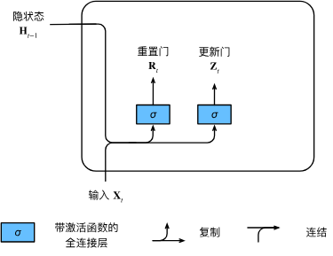
接下来，让我们将重置门与 (1) 中的常规隐状态更新机制集成， 得到在时间步$t$的候选隐状态（candidate hidden state） \(\tilde{\mathbf{H}}_t \in \mathbb{R}^{n \times h}\)：
$$\tilde{\mathbf{H}}_t = \tanh(\mathbf{X}_t \mathbf{W}_{xh} + \left(\mathbf{R}_t \odot \mathbf{H}_{t-1}\right) \mathbf{W}_{hh} + \mathbf{b}_h).\tag{2}$$这里，我们使用\(\tanh\)非线性激活函数来确保候选隐状态中的值保持在区间$(-1,1)$中。 与 (1)相比， (2)中的\(\mathbf{R}_t\) 和$\mathbf{H}_{t-1}$ 的元素相乘可以减少以往状态的影响。 每当重置门\(\mathbf{R}_t\) 中的项接近1 时， 我们恢复一个如 (1)中的普通的循环神经网络。 对于重置门$\mathbf{R}_t$ 中所有接近0 的项， 候选隐状态是以$\mathbf{X}_t$ 作为输入的多层感知机的结果。 因此，任何预先存在的隐状态都会被重置为默认值。
在门控循环单元模型中计算候选隐状态
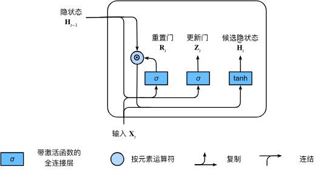
每当更新门$\mathbf{Z}_t$ 接近1 时，模型就倾向只保留旧状态。 此时，来自$\mathbf{X}_t$ 的信息基本上被忽略， 从而有效地跳过了依赖链条中的时间步$t$ 。 相反，当$\mathbf{Z}_t$ 接近0 时， 新的隐状态$\mathbf{H}_t$ 就会接近候选隐状态$\tilde{\mathbf{H}}_t$ 。 这些设计可以帮助我们处理循环神经网络中的梯度消失问题， 并更好地捕获时间步距离很长的序列的依赖关系。
计算门控循环单元模型中的隐状态
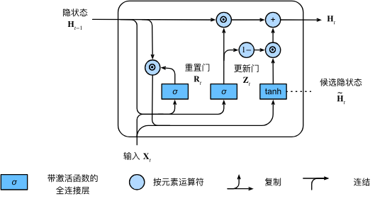
小结：
-
门控循环神经网络可以更好地捕获时间步距离很长的序列上的依赖关系。
-
重置门有助于捕获序列中的短期依赖关系。
-
更新门有助于捕获序列中的长期依赖关系。
-
重置门打开时，门控循环单元包含基本循环神经网络；更新门打开时，门控循环单元可以跳过子序列。
长短期记忆网络（Long short-term memory，LSTM）
长期以来，隐变量模型存在着长期信息保存和短期输入缺失的问题。 解决这一问题的最早方法之一是长短期存储器（long short-term memory，LSTM）。
长短期记忆网络是典型的具有重要状态控制的隐变量自回归模型。 多年来已经提出了其许多变体，例如，多层、残差连接、不同类型的正则化。 然而，由于序列的长距离依赖性，训练长短期记忆网络 和其他序列模型（例如门控循环单元）的成本是相当高的。 在后面的内容中，我们将讲述更高级的替代模型，如Transformer。
小结：
-
长短期记忆网络有三种类型的门：输入门、遗忘门和输出门。
-
长短期记忆网络的隐藏层输出包括“隐状态”和“记忆元”。只有隐状态会传递到输出层，而记忆元完全属于内部信息。
-
长短期记忆网络可以缓解梯度消失和梯度爆炸。
深度循环神经网络
深度循环神经网络架构
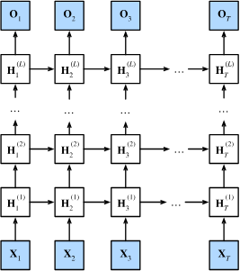双向循环神经网络
很明显，每个短语的“下文”传达了重要信息（如果有的话）， 而这些信息关乎到选择哪个词来填空， 所以无法利用这一点的序列模型将在相关任务上表现不佳。 例如，如果要做好命名实体识别 （例如，识别“Green”指的是“格林先生”还是绿色）， 不同长度的上下文范围重要性是相同的。
双向神经网络架构
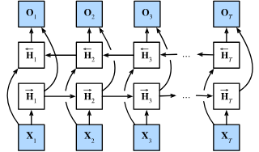双向循环神经网络的一个关键特性是：使用来自序列两端的信息来估计输出。 也就是说，我们使用来自过去和未来的观测信息来预测当前的观测。 但是在对下一个词元进行预测的情况中，这样的模型并不是我们所需的。 因为在预测下一个词元时，我们终究无法知道下一个词元的下文是什么， 所以将不会得到很好的精度。 具体地说，在训练期间，我们能够利用过去和未来的数据来估计现在空缺的词； 而在测试期间，我们只有过去的数据，因此精度将会很差。
另一个严重问题是，双向循环神经网络的计算速度非常慢。 其主要原因是网络的前向传播需要在双向层中进行前向和后向递归， 并且网络的反向传播还依赖于前向传播的结果。 因此，梯度求解将有一个非常长的链。
双向层的使用在实践中非常少，并且仅仅应用于部分场合。 例如，填充缺失的单词、词元注释（例如，用于命名实体识别） 以及作为序列处理流水线中的一个步骤对序列进行编码（例如，用于机器翻译）。
序列到序列学习
机器翻译中的输入序列和输出序列都是长度可变的， 为了解决这类问题，我们考虑“编码器——解码器”架构。遵循编码器－解码器架构的设计原则， 循环神经网络编码器使用长度可变的序列作为输入， 将其转换为固定形状的隐状态。 换言之，输入序列的信息被编码到循环神经网络编码器的隐状态中。 为了连续生成输出序列的词元， 独立的循环神经网络解码器是基于输入序列的编码信息 和输出序列已经看见的或者生成的词元来预测下一个词元。
使用循环神经网络编码器和循环神经网络解码器的序列到序列学习
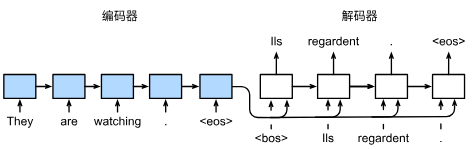其中特定的“
小结：
-
根据“编码器-解码器”架构的设计， 我们可以使用两个循环神经网络来设计一个序列到序列学习的模型。
-
在实现编码器和解码器时，我们可以使用多层循环神经网络。
-
我们可以使用遮蔽来过滤不相关的计算，例如在计算损失时。
-
在“编码器－解码器”训练中，强制教学方法将原始输出序列（而非预测结果）输入解码器。
-
BLEU是一种常用的评估方法，它通过测量预测序列和标签序列之间的 元语法的匹配度来评估预测。
序列搜索策略
-
序列搜索策略包括贪心搜索、穷举搜索和束搜索。
-
贪心搜索所选取序列的计算量最小，但精度相对较低。
穷3. 举搜索所选取序列的精度最高，但计算量最大。
- 束搜索通过灵活选择束宽，在正确率和计算代价之间进行权衡。
注意力机制
注意力提示
“是否包含自主性提示”将注意力机制与全连接层或汇聚层区别开来。 在注意力机制的背景下，自主性提示被称为查询（query）。 给定任何查询，注意力机制通过注意力汇聚（attention pooling） 将选择引导至感官输入（sensory inputs，例如中间特征表示）。 在注意力机制中，这些感官输入被称为值（value）。 更通俗的解释，每个值都与一个键（key）配对， 这可以想象为感官输入的非自主提示。 如下图所示，可以通过设计注意力汇聚的方式， 便于给定的查询（自主性提示）与键（非自主性提示）进行匹配， 这将引导得出最匹配的值（感官输入）。
注意力机制通过注意力汇聚将查询（自主性提示）和键（非自主性提示）结合在一起，实现对值（感官输入）的选择倾向
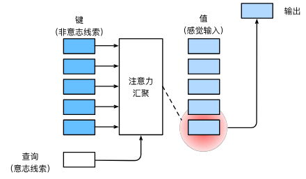注意力汇聚: Nadaraya-Watson 核回归
注意力汇聚公式：
$$f(x) = \sum_{i=1}^n \alpha(x, x_i) y_i,$$其中$x$是查询（query），$(x_i,y_i)$是键值对（key-value）。 注意力汇聚是$y_i$的加权平均。 将查询$x$和键$x_i$ 之间的关系建模为注意力权重（attention weight）$\alpha(x,x_i)$。对于任何查询，模型在所有键值对注意力权重都是一个有效的概率分布： 它们是非负的，并且总和为1。
Nadaraya-Watson核回归将注意力权重定义为：
$$\alpha(x,x_i) = \frac{K(x - x_i)}{\sum_{j=1}^n K(x - x_j)} ,$$其中$K$是核，我们可考虑高斯核：
$$K(u) = \frac{1}{\sqrt{2\pi}} \exp(-\frac{u^2}{2}).$$小结：
-
Nadaraya-Watson核回归是具有注意力机制的机器学习范例。
-
Nadaraya-Watson核回归的注意力汇聚是对训练数据中输出的加权平均。从注意力的角度来看，分配给每个值的注意力权重取决于将值所对应的键和查询作为输入的函数。
-
注意力汇聚可以分为非参数型和带参数型。
注意力评分函数
上节使用了高斯核来对查询和键之间的关系建模， 其中的高斯核指数部分可以视为注意力评分函数（attention scoring function）， 简称评分函数（scoring function）。Nadaraya-Watson核回归的注意力汇聚权重$\alpha(x,x_i)$可以看成是对评分函数的输出结果做一个softmax运算。
计算注意力汇聚的输出为值的加权和
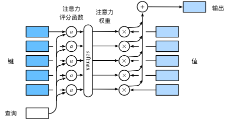加性注意力： 一般来说，当查询和键是不同长度的矢量时，可以使用加性注意力作为评分函数。 给定查询$\mathbf{q} \in \mathbb{R}^q$ 和 键$\mathbf{k} \in \mathbb{R}^k$， 加性注意力（additive attention）的评分函数为
$$a(\mathbf q, \mathbf k) = \mathbf w_v^\top \text{tanh}(\mathbf W_q\mathbf q + \mathbf W_k \mathbf k) \in \mathbb{R},$$其中可学习的参数是$\mathbf W_q\in\mathbb R^{h\times q}$、 $\mathbf W_k\in\mathbb R^{h\times k}$和$\mathbf w_v\in\mathbb R^{h}$。 即将查询和键连结起来后输入到一个多层感知机（MLP）中， 感知机包含一个隐藏层，其隐藏单元数是一个超参数$h$，使用$\tanh$作为激活函数，并且禁用偏置项。
多头注意力
与其只使用单独一个注意力汇聚，我们可以先对查询、 键和值做多组不同的可学习的线性变换，再对变换后的多组查询、 键和分别进行注意力汇聚，最后通过可学习的线性变换将这多组注意力的输出进行连结。这种设计被称为多头注意力（multihead attention）。
多头注意力：多个头连结然后线性变换
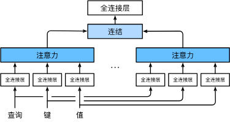小结：
-
多头注意力融合了来自于多个注意力汇聚的不同知识，这些知识的不同来源于相同的查询、键和值的不同的子空间表示。
-
基于适当的张量操作，可以实现多头注意力的并行计算。
自注意力和位置编码
比较卷积神经网络（填充词元被忽略）、循环神经网络和自注意力三种架构
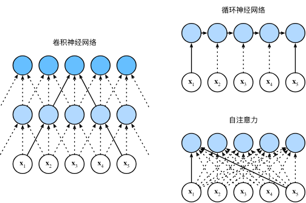小结：
-
在自注意力中，查询、键和值都来自同一组输入。
-
卷积神经网络和自注意力都拥有并行计算的优势，而且自注意力的最大路径长度最短。但是因为其计算复杂度是关于序列长度的二次方，所以在很长的序列中计算会非常慢。
-
为了使用序列的顺序信息，可以通过在输入表示中添加位置编码，来注入绝对的或相对的位置信息。